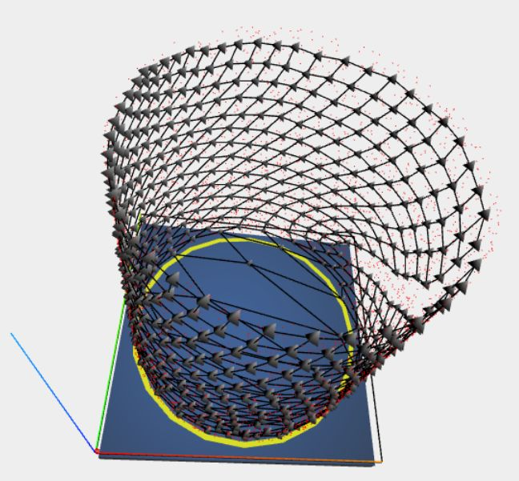

prev
next
3D Mode
There is also a 3D-mode (now the default) of the simulator (realized with WebGL, specifically threejs).
The 3D-mode can be activated (and de-activated) with the "2D/3D"-button. In 3D-mode most probability distributions get extended into the
third dimension z by simply setting z to a random number between 0 and 1. The regions of positive probability density are indicated by semi-transparent geometric bodies.

The following navigation is possible in the 3D-window:
- drag with left mouse-button: rotate scene around center in various ways using an Orbit control.
- drag with right mouse-button: move the scene in the viewing plane (up, down, left, right)
- mouse wheel: change zoom
- arrow buttons: move the camera up/down/left/right
There are similar operation with touch devices:
- one finger: rotate scene
- two fingers: change zoom
- three fingers: shift scene
Continuous camera movements around the axes x,y,z (actual center of rotation is the point [0.5, 0.5, 0.5] i.e. the center of the unit cube) can be triggered as follows with keys:
- "x" - toggle x-rotation (x-axis is red)
- "y" - toggle y-rotation (y-axis is green)
- "z" - toggle z-rotation (z-axis is blue) - this is on per default